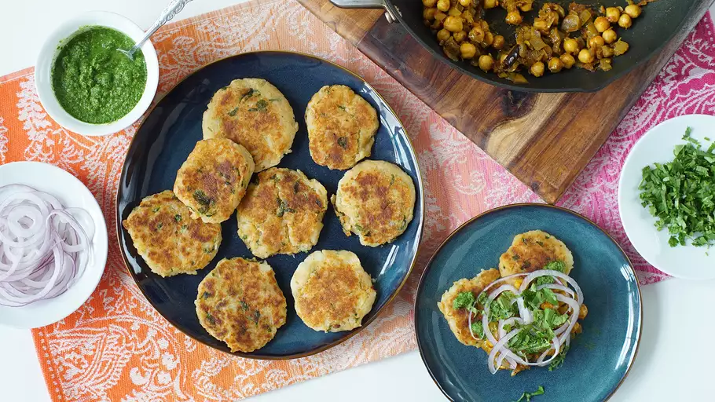

Indian Chole Aloo Tikki

Description
This is a delicious vegan Indian recipe where vegetables and chickpeas are served over small potato cakes. It works well as a starter for four, or as a vegetarian and vegan main for two. Place the potato cakes on a plate, serve the chickpeas on top, and don't forget the sauces! Finally, sprinkle with some fresh coriander leaves and a few thin slices of fresh onion.
Total Time: 1 hr 10 mins
Yield: 4 servings
Ingredients
- 2 potatoes
- salt and freshly ground black pepper to taste
- 3 1/2 tablespoons vegetable oil, divided
- 1 tablespoon cornstarch
- 1 teaspoon ground ginger
- 1 teaspoon ground cumin
- 1 teaspoon cayenne pepper
- 1 tablespoon chopped fresh cilantro
- 1/2 teaspoon black peppercorns
- 2 whole cloves
- 2 small dried chile peppers (Optional)
- 1 teaspoon cumin seeds
- 2 bay leaves
- 1 onion, chopped
- 2 cloves garlic, grated
- 1 (1/2 inch) piece fresh ginger, grated
- 2 teaspoons curry powder
- 1 teaspoon ground turmeric
- 1 teaspoon tomato paste
- 1 teaspoon water
- 1 tomato, chopped
- 1 (15 ounce) can garbanzo beans, drained
- 1 tablespoon cilantro leaves
Steps
- Place potatoes into a large pot and cover with salted water; bring to a boil. Reduce heat to medium-low and simmer until tender, about 20 minutes. Drain and peel.
- Place cooked potatoes into a bowl and add cornstarch, ginger, cumin, cayenne, cilantro, salt, and pepper. Mash together with a fork.
- Oil your hands with a little vegetable oil and divide the potato mixture into 4 equal portions. Pat each portion into a potato patty about 1/3-inch
thick.
- Heat 1 tablespoon vegetable oil in a skillet over medium heat. Fry potato cakes until golden, about 3 minutes on each side. Remove from heat and keep warm.
- Grind peppercorns and cloves with a mortar and pestle.
- Heat the remaining 2 tablespoons vegetable oil in a skillet over medium-high heat.
- Stir in red chile peppers, cumin, bay leaves. Add onion, ginger, and garlic. Cook and stir until onion is golden, about 5 minutes. Add pepper-clove mixture, curry powder, and
turmeric.
- Mix tomato paste with water. Stir diluted tomato paste and tomato into the skillet. Cook over medium heat until the tomato has softened, about 5 minutes. Stir in chickpeas and simmer over low heat for 10 minutes.
- Spoon chickpea sauce over the potato cakes and sprinkle with cilantro leaves.
- Serve and enjoy!
Home